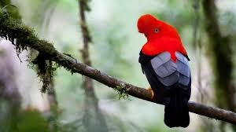

El gallito de las rocas es considerada como el ave nacional del Perú. Su hábitat son los bosques de montaña de la región amazónica, entre los 1500 y 2500 m.s.n.m., y se lo puede encontrar en el Santuario Histórico de Machu Picchu. Su tamaño es el de una gallina pequeña y de plumaje escarlata, el macho lleva en la cabeza una cresta en forma de abanico, su color es más intenso que el de la hembra. Su principal alimento es la fruta.
El gallito de las rocas es de gran importancia para el bosque, pues dispersa las semillas de muchas especies de árboles. Por tener los colores tan vistosos se lo ha definido como "cometa de fuego" y "llamarada en vuelo", construye su nido en sitios de penumbra, empleando barro y espinos, donde pone solo dos huevos.
El barro de su nido mezclado con vinagre cura la sarna y la tiña. Se dice que los indios, antiguamente, utilizaban las plumas para realizar brujerías y que, si las llevaban consigo, eran invencibles en la guerra pues podrían aplacar la ira del enemigo.